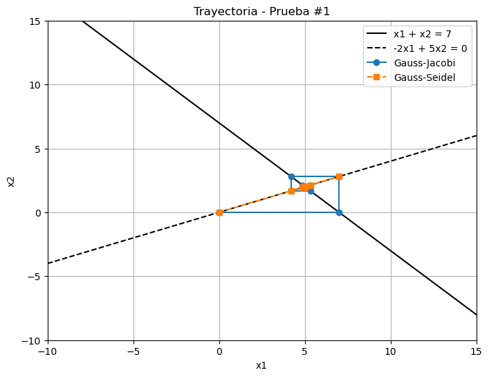

from iterative_methods import gauss_jacobi, gauss_seidel
import numpy as np
import matplotlib.pyplot as plt
# Sistema
A = np.array([[1, 1], [-2, 5]], dtype=float)
b = np.array([[7], [0]], dtype=float)
# Condiciones iniciales
x0_list = [
np.array([[0.0], [0.0]]),
np.array([[5.0], [2.0]]),
np.array([[100.0], [-100.0]]) # Candidata a divergencia
]
# Parámetros
tol = 1e-5
max_iter = 25Escuela Politécnica Nacional
Métodos Numéricos
Integrantes:
- Jhonn Saeteros
- Christian Ayala
Grafique la trayectoria de los siguientes sistemas de ecuaciones
Ejercicio 1
1) \(x_1+x_2=7\)
2) \(-2x_1+5x_2=0\)
3) \(x_0=(0,0)\)
4) \(x_0=(5,2)\)
Ejercicio 2
1) \(x_1+x_2=6\)
2) \(-2x_1+x_2=0\)
Ejercicio 1
import numpy as np
import matplotlib.pyplot as plt
# Tus funciones gauss_jacobi y gauss_seidel ya deben estar definidas/importadas
def resolver_y_graficar_con_ecuaciones(x0, nombre, A, b, tol, max_iter):
print(f"\nPrueba: {nombre} con x0 = {x0.ravel()}")
# Ejecutar métodos
sol_jacobi, tray_jacobi = gauss_jacobi(A=A, b=b, x0=x0, tol=tol, max_iter=max_iter)
convergio_jacobi = len(tray_jacobi) < max_iter
sol_seidel, tray_seidel = gauss_seidel(A=A, b=b, x0=x0, tol=tol, max_iter=max_iter)
convergio_seidel = len(tray_seidel) < max_iter
# Convertir trayectorias a arrays (n_iter, 2)
tray_jacobi = np.concatenate(tray_jacobi, axis=1).T
tray_seidel = np.concatenate(tray_seidel, axis=1).T
# Preparar gráfico
plt.figure(figsize=(8, 6))
# Graficar ecuaciones:
x_vals = np.linspace(-10, 15, 300)
# Primera ecuación: x1 + x2 = 7 => x2 = 7 - x1
y1 = 7 - x_vals
# Segunda ecuación: -2x1 + 5x2 = 0 => x2 = (2/5)*x1
y2 = (2/5) * x_vals
plt.plot(x_vals, y1, 'k-', label='x1 + x2 = 7')
plt.plot(x_vals, y2, 'k--', label='-2x1 + 5x2 = 0')
# Graficar trayectorias
plt.plot(tray_jacobi[:, 0], tray_jacobi[:, 1], 'o-', label='Gauss-Jacobi')
plt.plot(tray_seidel[:, 0], tray_seidel[:, 1], 's--', label='Gauss-Seidel')
# Ajustes gráficos
plt.title(f"Trayectoria - {nombre}")
plt.xlabel('x1')
plt.ylabel('x2')
plt.legend()
plt.grid(True)
plt.xlim(-10, 15)
plt.ylim(-10, 15)
plt.show()
# Mostrar info de convergencia y soluciones
print(f"Gauss-Jacobi: {'Convergió' if convergio_jacobi else 'Divergió'} → {sol_jacobi.ravel()}")
print(f"Gauss-Seidel: {'Convergió' if convergio_seidel else 'Divergió'} → {sol_seidel.ravel()}")
# Parámetros y sistema
A = np.array([[1, 1], [-2, 5]], dtype=float)
b = np.array([[7], [0]], dtype=float)
tol = 1e-5
max_iter = 30
# Condiciones iniciales ordenadas
x0_list = [
np.array([[0.0], [0.0]]),
np.array([[5.0], [2.0]]),
np.array([[100.0], [-100.0]])
]
# Ejecutar pruebas ordenadas
for i, x0 in enumerate(x0_list, start=1):
resolver_y_graficar_con_ecuaciones(x0, f"Prueba #{i}", A, b, tol, max_iter)
Prueba: Prueba #1 con x0 = [0. 0.]
[07-15 17:58:12][INFO] i= 0 x: [[0. 0.]]
[07-15 17:58:12][INFO] i= 1 x: [[7. 0.]]
[07-15 17:58:12][INFO] i= 2 x: [[7. 2.8]]
[07-15 17:58:12][INFO] i= 3 x: [[4.2 2.8]]
[07-15 17:58:12][INFO] i= 4 x: [[4.2 1.68]]
[07-15 17:58:12][INFO] i= 5 x: [[5.32 1.68]]
[07-15 17:58:12][INFO] i= 6 x: [[5.32 2.128]]
[07-15 17:58:12][INFO] i= 7 x: [[4.872 2.128]]
[07-15 17:58:12][INFO] i= 8 x: [[4.872 1.9488]]
[07-15 17:58:12][INFO] i= 9 x: [[5.0512 1.9488]]
[07-15 17:58:12][INFO] i= 10 x: [[5.0512 2.02048]]
[07-15 17:58:12][INFO] i= 11 x: [[4.97952 2.02048]]
[07-15 17:58:12][INFO] i= 12 x: [[4.97952 1.991808]]
[07-15 17:58:12][INFO] i= 13 x: [[5.008192 1.991808]]
[07-15 17:58:12][INFO] i= 14 x: [[5.008192 2.0032768]]
[07-15 17:58:12][INFO] i= 15 x: [[4.9967232 2.0032768]]
[07-15 17:58:12][INFO] i= 16 x: [[4.9967232 1.99868928]]
[07-15 17:58:12][INFO] i= 17 x: [[5.00131072 1.99868928]]
[07-15 17:58:12][INFO] i= 18 x: [[5.00131072 2.00052429]]
[07-15 17:58:12][INFO] i= 19 x: [[4.99947571 2.00052429]]
[07-15 17:58:12][INFO] i= 20 x: [[4.99947571 1.99979028]]
[07-15 17:58:12][INFO] i= 21 x: [[5.00020972 1.99979028]]
[07-15 17:58:12][INFO] i= 22 x: [[5.00020972 2.00008389]]
[07-15 17:58:12][INFO] i= 23 x: [[4.99991611 2.00008389]]
[07-15 17:58:12][INFO] i= 24 x: [[4.99991611 1.99996645]]
[07-15 17:58:12][INFO] i= 25 x: [[5.00003355 1.99996645]]
[07-15 17:58:12][INFO] i= 26 x: [[5.00003355 2.00001342]]
[07-15 17:58:12][INFO] i= 27 x: [[4.99998658 2.00001342]]
[07-15 17:58:12][INFO] i= 28 x: [[4.99998658 1.99999463]]
[07-15 17:58:12][INFO] i= 29 x: [[5.00000537 1.99999463]]
[07-15 17:58:12][INFO] i= 0 x: [[0. 0.]]
[07-15 17:58:12][INFO] i= 1 x: [[7. 2.8]]
[07-15 17:58:12][INFO] i= 2 x: [[4.2 1.68]]
[07-15 17:58:12][INFO] i= 3 x: [[5.32 2.128]]
[07-15 17:58:12][INFO] i= 4 x: [[4.872 1.9488]]
[07-15 17:58:12][INFO] i= 5 x: [[5.0512 2.02048]]
[07-15 17:58:12][INFO] i= 6 x: [[4.97952 1.991808]]
[07-15 17:58:12][INFO] i= 7 x: [[5.008192 2.0032768]]
[07-15 17:58:12][INFO] i= 8 x: [[4.9967232 1.99868928]]
[07-15 17:58:12][INFO] i= 9 x: [[5.00131072 2.00052429]]
[07-15 17:58:12][INFO] i= 10 x: [[4.99947571 1.99979028]]
[07-15 17:58:12][INFO] i= 11 x: [[5.00020972 2.00008389]]
[07-15 17:58:12][INFO] i= 12 x: [[4.99991611 1.99996645]]
[07-15 17:58:12][INFO] i= 13 x: [[5.00003355 2.00001342]]
[07-15 17:58:12][INFO] i= 14 x: [[4.99998658 1.99999463]]
[07-15 17:58:12][INFO] i= 15 x: [[5.00000537 2.00000215]]
Gauss-Jacobi: Divergió → [5.00000537 1.99999463]
Gauss-Seidel: Convergió → [4.99999785 1.99999914]
Prueba: Prueba #2 con x0 = [5. 2.]
[07-15 17:58:12][INFO] i= 0 x: [[5. 2.]]
[07-15 17:58:12][INFO] i= 0 x: [[5. 2.]]Gauss-Jacobi: Convergió → [5. 2.]
Gauss-Seidel: Convergió → [5. 2.]
Prueba: Prueba #3 con x0 = [ 100. -100.]
[07-15 17:58:13][INFO] i= 0 x: [[ 100. -100.]]
[07-15 17:58:13][INFO] i= 1 x: [[107. 40.]]
[07-15 17:58:13][INFO] i= 2 x: [[-33. 42.8]]
[07-15 17:58:13][INFO] i= 3 x: [[-35.8 -13.2]]
[07-15 17:58:13][INFO] i= 4 x: [[ 20.2 -14.32]]
[07-15 17:58:13][INFO] i= 5 x: [[21.32 8.08]]
[07-15 17:58:13][INFO] i= 6 x: [[-1.08 8.528]]
[07-15 17:58:13][INFO] i= 7 x: [[-1.528 -0.432]]
[07-15 17:58:13][INFO] i= 8 x: [[ 7.432 -0.6112]]
[07-15 17:58:13][INFO] i= 9 x: [[7.6112 2.9728]]
[07-15 17:58:13][INFO] i= 10 x: [[4.0272 3.04448]]
[07-15 17:58:13][INFO] i= 11 x: [[3.95552 1.61088]]
[07-15 17:58:13][INFO] i= 12 x: [[5.38912 1.582208]]
[07-15 17:58:13][INFO] i= 13 x: [[5.417792 2.155648]]
[07-15 17:58:13][INFO] i= 14 x: [[4.844352 2.1671168]]
[07-15 17:58:13][INFO] i= 15 x: [[4.8328832 1.9377408]]
[07-15 17:58:13][INFO] i= 16 x: [[5.0622592 1.93315328]]
[07-15 17:58:13][INFO] i= 17 x: [[5.06684672 2.02490368]]
[07-15 17:58:13][INFO] i= 18 x: [[4.97509632 2.02673869]]
[07-15 17:58:13][INFO] i= 19 x: [[4.97326131 1.99003853]]
[07-15 17:58:13][INFO] i= 20 x: [[5.00996147 1.98930452]]
[07-15 17:58:13][INFO] i= 21 x: [[5.01069548 2.00398459]]
[07-15 17:58:13][INFO] i= 22 x: [[4.99601541 2.00427819]]
[07-15 17:58:13][INFO] i= 23 x: [[4.99572181 1.99840616]]
[07-15 17:58:13][INFO] i= 24 x: [[5.00159384 1.99828872]]
[07-15 17:58:13][INFO] i= 25 x: [[5.00171128 2.00063753]]
[07-15 17:58:13][INFO] i= 26 x: [[4.99936247 2.00068451]]
[07-15 17:58:13][INFO] i= 27 x: [[4.99931549 1.99974499]]
[07-15 17:58:13][INFO] i= 28 x: [[5.00025501 1.9997262 ]]
[07-15 17:58:13][INFO] i= 29 x: [[5.0002738 2.00010201]]
[07-15 17:58:13][INFO] i= 0 x: [[ 100. -100.]]
[07-15 17:58:13][INFO] i= 1 x: [[107. 42.8]]
[07-15 17:58:13][INFO] i= 2 x: [[-35.8 -14.32]]
[07-15 17:58:13][INFO] i= 3 x: [[21.32 8.528]]
[07-15 17:58:13][INFO] i= 4 x: [[-1.528 -0.6112]]
[07-15 17:58:13][INFO] i= 5 x: [[7.6112 3.04448]]
[07-15 17:58:13][INFO] i= 6 x: [[3.95552 1.582208]]
[07-15 17:58:13][INFO] i= 7 x: [[5.417792 2.1671168]]
[07-15 17:58:13][INFO] i= 8 x: [[4.8328832 1.93315328]]
[07-15 17:58:13][INFO] i= 9 x: [[5.06684672 2.02673869]]
[07-15 17:58:13][INFO] i= 10 x: [[4.97326131 1.98930452]]
[07-15 17:58:13][INFO] i= 11 x: [[5.01069548 2.00427819]]
[07-15 17:58:13][INFO] i= 12 x: [[4.99572181 1.99828872]]
[07-15 17:58:13][INFO] i= 13 x: [[5.00171128 2.00068451]]
[07-15 17:58:13][INFO] i= 14 x: [[4.99931549 1.9997262 ]]
[07-15 17:58:13][INFO] i= 15 x: [[5.0002738 2.00010952]]
[07-15 17:58:13][INFO] i= 16 x: [[4.99989048 1.99995619]]
[07-15 17:58:13][INFO] i= 17 x: [[5.00004381 2.00001752]]
[07-15 17:58:13][INFO] i= 18 x: [[4.99998248 1.99999299]]
[07-15 17:58:13][INFO] i= 19 x: [[5.00000701 2.0000028 ]]
[07-15 17:58:13][INFO] i= 20 x: [[4.9999972 1.99999888]]Gauss-Jacobi: Divergió → [5.0002738 2.00010201]
Gauss-Seidel: Convergió → [5.00000112 2.00000045]Ejercicio 2
# Nuevo sistema
A = np.array([[1, 1], [-2, 1]], dtype=float)
b = np.array([[6], [0]], dtype=float)
tol = 1e-5
max_iter = 30
x0_list = [
np.array([[0.0], [0.0]]),
np.array([[5.0], [2.0]]),
np.array([[100.0], [-100.0]]) # Candidata a divergencia
]def resolver_y_graficar_con_ecuaciones(x0, nombre, A, b, tol, max_iter):
print(f"\nPrueba: {nombre} con x0 = {x0.ravel()}")
# Ejecutar métodos
sol_jacobi, tray_jacobi = gauss_jacobi(A=A, b=b, x0=x0, tol=tol, max_iter=max_iter)
convergio_jacobi = len(tray_jacobi) < max_iter
sol_seidel, tray_seidel = gauss_seidel(A=A, b=b, x0=x0, tol=tol, max_iter=max_iter)
convergio_seidel = len(tray_seidel) < max_iter
# Convertir trayectorias
tray_jacobi = np.concatenate(tray_jacobi, axis=1).T
tray_seidel = np.concatenate(tray_seidel, axis=1).T
# Preparar gráfico
plt.figure(figsize=(8, 6))
# Ecuaciones
x_vals = np.linspace(-10, 15, 300)
y1 = 6 - x_vals # x1 + x2 = 6 → x2 = 6 - x1
y2 = 2 * x_vals # -2x1 + x2 = 0 → x2 = 2x1
plt.plot(x_vals, y1, 'k-', label='x1 + x2 = 6')
plt.plot(x_vals, y2, 'k--', label='-2x1 + x2 = 0')
# Trayectorias
plt.plot(tray_jacobi[:, 0], tray_jacobi[:, 1], 'o-', label='Gauss-Jacobi')
plt.plot(tray_seidel[:, 0], tray_seidel[:, 1], 's--', label='Gauss-Seidel')
# Ajustes visuales
plt.title(f"Trayectoria - {nombre}")
plt.xlabel('x1')
plt.ylabel('x2')
plt.legend()
plt.grid(True)
plt.xlim(-10, 15)
plt.ylim(-10, 15)
plt.show()
# Mostrar resultados
print(f"Gauss-Jacobi: {'Convergió' if convergio_jacobi else 'Divergió'} → {sol_jacobi.ravel()}")
print(f"Gauss-Seidel: {'Convergió' if convergio_seidel else 'Divergió'} → {sol_seidel.ravel()}")for i, x0 in enumerate(x0_list, start=1):
resolver_y_graficar_con_ecuaciones(x0, f"Prueba #{i}", A, b, tol, max_iter)
#
Prueba: Prueba #1 con x0 = [0. 0.]
[07-15 17:44:56][INFO] i= 0 x: [[0. 0.]]
[07-15 17:44:56][INFO] i= 1 x: [[6. 0.]]
[07-15 17:44:56][INFO] i= 2 x: [[ 6. 12.]]
[07-15 17:44:56][INFO] i= 3 x: [[-6. 12.]]
[07-15 17:44:56][INFO] i= 4 x: [[ -6. -12.]]
[07-15 17:44:56][INFO] i= 5 x: [[ 18. -12.]]
[07-15 17:44:56][INFO] i= 6 x: [[18. 36.]]
[07-15 17:44:56][INFO] i= 7 x: [[-30. 36.]]
[07-15 17:44:56][INFO] i= 8 x: [[-30. -60.]]
[07-15 17:44:56][INFO] i= 9 x: [[ 66. -60.]]
[07-15 17:44:56][INFO] i= 10 x: [[ 66. 132.]]
[07-15 17:44:56][INFO] i= 11 x: [[-126. 132.]]
[07-15 17:44:56][INFO] i= 12 x: [[-126. -252.]]
[07-15 17:44:56][INFO] i= 13 x: [[ 258. -252.]]
[07-15 17:44:56][INFO] i= 14 x: [[258. 516.]]
[07-15 17:44:56][INFO] i= 15 x: [[-510. 516.]]
[07-15 17:44:56][INFO] i= 16 x: [[ -510. -1020.]]
[07-15 17:44:56][INFO] i= 17 x: [[ 1026. -1020.]]
[07-15 17:44:56][INFO] i= 18 x: [[1026. 2052.]]
[07-15 17:44:56][INFO] i= 19 x: [[-2046. 2052.]]
[07-15 17:44:56][INFO] i= 20 x: [[-2046. -4092.]]
[07-15 17:44:56][INFO] i= 21 x: [[ 4098. -4092.]]
[07-15 17:44:56][INFO] i= 22 x: [[4098. 8196.]]
[07-15 17:44:56][INFO] i= 23 x: [[-8190. 8196.]]
[07-15 17:44:56][INFO] i= 24 x: [[ -8190. -16380.]]
[07-15 17:44:56][INFO] i= 25 x: [[ 16386. -16380.]]
[07-15 17:44:56][INFO] i= 26 x: [[16386. 32772.]]
[07-15 17:44:56][INFO] i= 27 x: [[-32766. 32772.]]
[07-15 17:44:56][INFO] i= 28 x: [[-32766. -65532.]]
[07-15 17:44:56][INFO] i= 29 x: [[ 65538. -65532.]]
[07-15 17:44:56][INFO] i= 0 x: [[0. 0.]]
[07-15 17:44:56][INFO] i= 1 x: [[ 6. 12.]]
[07-15 17:44:56][INFO] i= 2 x: [[ -6. -12.]]
[07-15 17:44:56][INFO] i= 3 x: [[18. 36.]]
[07-15 17:44:56][INFO] i= 4 x: [[-30. -60.]]
[07-15 17:44:56][INFO] i= 5 x: [[ 66. 132.]]
[07-15 17:44:56][INFO] i= 6 x: [[-126. -252.]]
[07-15 17:44:56][INFO] i= 7 x: [[258. 516.]]
[07-15 17:44:56][INFO] i= 8 x: [[ -510. -1020.]]
[07-15 17:44:56][INFO] i= 9 x: [[1026. 2052.]]
[07-15 17:44:56][INFO] i= 10 x: [[-2046. -4092.]]
[07-15 17:44:56][INFO] i= 11 x: [[4098. 8196.]]
[07-15 17:44:56][INFO] i= 12 x: [[ -8190. -16380.]]
[07-15 17:44:56][INFO] i= 13 x: [[16386. 32772.]]
[07-15 17:44:56][INFO] i= 14 x: [[-32766. -65532.]]
[07-15 17:44:56][INFO] i= 15 x: [[ 65538. 131076.]]
[07-15 17:44:56][INFO] i= 16 x: [[-131070. -262140.]]
[07-15 17:44:56][INFO] i= 17 x: [[262146. 524292.]]
[07-15 17:44:56][INFO] i= 18 x: [[ -524286. -1048572.]]
[07-15 17:44:56][INFO] i= 19 x: [[1048578. 2097156.]]
[07-15 17:44:56][INFO] i= 20 x: [[-2097150. -4194300.]]
[07-15 17:44:56][INFO] i= 21 x: [[4194306. 8388612.]]
[07-15 17:44:56][INFO] i= 22 x: [[ -8388606. -16777212.]]
[07-15 17:44:56][INFO] i= 23 x: [[16777218. 33554436.]]
[07-15 17:44:56][INFO] i= 24 x: [[-33554430. -67108860.]]
[07-15 17:44:56][INFO] i= 25 x: [[6.71088660e+07 1.34217732e+08]]
[07-15 17:44:56][INFO] i= 26 x: [[-1.34217726e+08 -2.68435452e+08]]
[07-15 17:44:56][INFO] i= 27 x: [[2.68435458e+08 5.36870916e+08]]
[07-15 17:44:56][INFO] i= 28 x: [[-5.36870910e+08 -1.07374182e+09]]
[07-15 17:44:56][INFO] i= 29 x: [[1.07374183e+09 2.14748365e+09]]Gauss-Jacobi: Divergió → [ 65538. -65532.]
Gauss-Seidel: Divergió → [1.07374183e+09 2.14748365e+09]
Prueba: Prueba #2 con x0 = [5. 2.]
[07-15 17:44:56][INFO] i= 0 x: [[5. 2.]]
[07-15 17:44:56][INFO] i= 1 x: [[ 4. 10.]]
[07-15 17:44:56][INFO] i= 2 x: [[-4. 8.]]
[07-15 17:44:56][INFO] i= 3 x: [[-2. -8.]]
[07-15 17:44:56][INFO] i= 4 x: [[14. -4.]]
[07-15 17:44:56][INFO] i= 5 x: [[10. 28.]]
[07-15 17:44:56][INFO] i= 6 x: [[-22. 20.]]
[07-15 17:44:56][INFO] i= 7 x: [[-14. -44.]]
[07-15 17:44:56][INFO] i= 8 x: [[ 50. -28.]]
[07-15 17:44:56][INFO] i= 9 x: [[ 34. 100.]]
[07-15 17:44:56][INFO] i= 10 x: [[-94. 68.]]
[07-15 17:44:56][INFO] i= 11 x: [[ -62. -188.]]
[07-15 17:44:56][INFO] i= 12 x: [[ 194. -124.]]
[07-15 17:44:56][INFO] i= 13 x: [[130. 388.]]
[07-15 17:44:56][INFO] i= 14 x: [[-382. 260.]]
[07-15 17:44:56][INFO] i= 15 x: [[-254. -764.]]
[07-15 17:44:56][INFO] i= 16 x: [[ 770. -508.]]
[07-15 17:44:56][INFO] i= 17 x: [[ 514. 1540.]]
[07-15 17:44:56][INFO] i= 18 x: [[-1534. 1028.]]
[07-15 17:44:56][INFO] i= 19 x: [[-1022. -3068.]]
[07-15 17:44:56][INFO] i= 20 x: [[ 3074. -2044.]]
[07-15 17:44:56][INFO] i= 21 x: [[2050. 6148.]]
[07-15 17:44:56][INFO] i= 22 x: [[-6142. 4100.]]
[07-15 17:44:56][INFO] i= 23 x: [[ -4094. -12284.]]
[07-15 17:44:56][INFO] i= 24 x: [[12290. -8188.]]
[07-15 17:44:56][INFO] i= 25 x: [[ 8194. 24580.]]
[07-15 17:44:56][INFO] i= 26 x: [[-24574. 16388.]]
[07-15 17:44:56][INFO] i= 27 x: [[-16382. -49148.]]
[07-15 17:44:56][INFO] i= 28 x: [[ 49154. -32764.]]
[07-15 17:44:56][INFO] i= 29 x: [[32770. 98308.]]
[07-15 17:44:56][INFO] i= 0 x: [[5. 2.]]
[07-15 17:44:56][INFO] i= 1 x: [[4. 8.]]
[07-15 17:44:56][INFO] i= 2 x: [[-2. -4.]]
[07-15 17:44:56][INFO] i= 3 x: [[10. 20.]]
[07-15 17:44:56][INFO] i= 4 x: [[-14. -28.]]
[07-15 17:44:56][INFO] i= 5 x: [[34. 68.]]
[07-15 17:44:56][INFO] i= 6 x: [[ -62. -124.]]
[07-15 17:44:56][INFO] i= 7 x: [[130. 260.]]
[07-15 17:44:56][INFO] i= 8 x: [[-254. -508.]]
[07-15 17:44:56][INFO] i= 9 x: [[ 514. 1028.]]
[07-15 17:44:56][INFO] i= 10 x: [[-1022. -2044.]]
[07-15 17:44:56][INFO] i= 11 x: [[2050. 4100.]]
[07-15 17:44:56][INFO] i= 12 x: [[-4094. -8188.]]
[07-15 17:44:56][INFO] i= 13 x: [[ 8194. 16388.]]
[07-15 17:44:56][INFO] i= 14 x: [[-16382. -32764.]]
[07-15 17:44:56][INFO] i= 15 x: [[32770. 65540.]]
[07-15 17:44:56][INFO] i= 16 x: [[ -65534. -131068.]]
[07-15 17:44:56][INFO] i= 17 x: [[131074. 262148.]]
[07-15 17:44:56][INFO] i= 18 x: [[-262142. -524284.]]
[07-15 17:44:56][INFO] i= 19 x: [[ 524290. 1048580.]]
[07-15 17:44:56][INFO] i= 20 x: [[-1048574. -2097148.]]
[07-15 17:44:56][INFO] i= 21 x: [[2097154. 4194308.]]
[07-15 17:44:56][INFO] i= 22 x: [[-4194302. -8388604.]]
[07-15 17:44:56][INFO] i= 23 x: [[ 8388610. 16777220.]]
[07-15 17:44:56][INFO] i= 24 x: [[-16777214. -33554428.]]
[07-15 17:44:56][INFO] i= 25 x: [[33554434. 67108868.]]
[07-15 17:44:56][INFO] i= 26 x: [[-6.71088620e+07 -1.34217724e+08]]
[07-15 17:44:56][INFO] i= 27 x: [[1.3421773e+08 2.6843546e+08]]
[07-15 17:44:56][INFO] i= 28 x: [[-2.68435454e+08 -5.36870908e+08]]
[07-15 17:44:56][INFO] i= 29 x: [[5.36870914e+08 1.07374183e+09]]Gauss-Jacobi: Divergió → [32770. 98308.]
Gauss-Seidel: Divergió → [5.36870914e+08 1.07374183e+09]
Prueba: Prueba #3 con x0 = [ 100. -100.]
[07-15 17:44:56][INFO] i= 0 x: [[ 100. -100.]]
[07-15 17:44:57][INFO] i= 1 x: [[106. 200.]]
[07-15 17:44:57][INFO] i= 2 x: [[-194. 212.]]
[07-15 17:44:57][INFO] i= 3 x: [[-206. -388.]]
[07-15 17:44:57][INFO] i= 4 x: [[ 394. -412.]]
[07-15 17:44:57][INFO] i= 5 x: [[418. 788.]]
[07-15 17:44:57][INFO] i= 6 x: [[-782. 836.]]
[07-15 17:44:57][INFO] i= 7 x: [[ -830. -1564.]]
[07-15 17:44:57][INFO] i= 8 x: [[ 1570. -1660.]]
[07-15 17:44:57][INFO] i= 9 x: [[1666. 3140.]]
[07-15 17:44:57][INFO] i= 10 x: [[-3134. 3332.]]
[07-15 17:44:57][INFO] i= 11 x: [[-3326. -6268.]]
[07-15 17:44:57][INFO] i= 12 x: [[ 6274. -6652.]]
[07-15 17:44:57][INFO] i= 13 x: [[ 6658. 12548.]]
[07-15 17:44:57][INFO] i= 14 x: [[-12542. 13316.]]
[07-15 17:44:57][INFO] i= 15 x: [[-13310. -25084.]]
[07-15 17:44:57][INFO] i= 16 x: [[ 25090. -26620.]]
[07-15 17:44:57][INFO] i= 17 x: [[26626. 50180.]]
[07-15 17:44:57][INFO] i= 18 x: [[-50174. 53252.]]
[07-15 17:44:57][INFO] i= 19 x: [[ -53246. -100348.]]
[07-15 17:44:57][INFO] i= 20 x: [[ 100354. -106492.]]
[07-15 17:44:57][INFO] i= 21 x: [[106498. 200708.]]
[07-15 17:44:57][INFO] i= 22 x: [[-200702. 212996.]]
[07-15 17:44:57][INFO] i= 23 x: [[-212990. -401404.]]
[07-15 17:44:57][INFO] i= 24 x: [[ 401410. -425980.]]
[07-15 17:44:57][INFO] i= 25 x: [[425986. 802820.]]
[07-15 17:44:57][INFO] i= 26 x: [[-802814. 851972.]]
[07-15 17:44:57][INFO] i= 27 x: [[ -851966. -1605628.]]
[07-15 17:44:57][INFO] i= 28 x: [[ 1605634. -1703932.]]
[07-15 17:44:57][INFO] i= 29 x: [[1703938. 3211268.]]
[07-15 17:44:57][INFO] i= 0 x: [[ 100. -100.]]
[07-15 17:44:57][INFO] i= 1 x: [[106. 212.]]
[07-15 17:44:57][INFO] i= 2 x: [[-206. -412.]]
[07-15 17:44:57][INFO] i= 3 x: [[418. 836.]]
[07-15 17:44:57][INFO] i= 4 x: [[ -830. -1660.]]
[07-15 17:44:57][INFO] i= 5 x: [[1666. 3332.]]
[07-15 17:44:57][INFO] i= 6 x: [[-3326. -6652.]]
[07-15 17:44:57][INFO] i= 7 x: [[ 6658. 13316.]]
[07-15 17:44:57][INFO] i= 8 x: [[-13310. -26620.]]
[07-15 17:44:57][INFO] i= 9 x: [[26626. 53252.]]
[07-15 17:44:57][INFO] i= 10 x: [[ -53246. -106492.]]
[07-15 17:44:57][INFO] i= 11 x: [[106498. 212996.]]
[07-15 17:44:57][INFO] i= 12 x: [[-212990. -425980.]]
[07-15 17:44:57][INFO] i= 13 x: [[425986. 851972.]]
[07-15 17:44:57][INFO] i= 14 x: [[ -851966. -1703932.]]
[07-15 17:44:57][INFO] i= 15 x: [[1703938. 3407876.]]
[07-15 17:44:57][INFO] i= 16 x: [[-3407870. -6815740.]]
[07-15 17:44:57][INFO] i= 17 x: [[ 6815746. 13631492.]]
[07-15 17:44:57][INFO] i= 18 x: [[-13631486. -27262972.]]
[07-15 17:44:57][INFO] i= 19 x: [[27262978. 54525956.]]
[07-15 17:44:57][INFO] i= 20 x: [[-5.452595e+07 -1.090519e+08]]
[07-15 17:44:57][INFO] i= 21 x: [[1.09051906e+08 2.18103812e+08]]
[07-15 17:44:57][INFO] i= 22 x: [[-2.18103806e+08 -4.36207612e+08]]
[07-15 17:44:57][INFO] i= 23 x: [[4.36207618e+08 8.72415236e+08]]
[07-15 17:44:57][INFO] i= 24 x: [[-8.72415230e+08 -1.74483046e+09]]
[07-15 17:44:57][INFO] i= 25 x: [[1.74483047e+09 3.48966093e+09]]
[07-15 17:44:57][INFO] i= 26 x: [[-3.48966093e+09 -6.97932185e+09]]
[07-15 17:44:57][INFO] i= 27 x: [[6.97932186e+09 1.39586437e+10]]
[07-15 17:44:57][INFO] i= 28 x: [[-1.39586437e+10 -2.79172874e+10]]
[07-15 17:44:57][INFO] i= 29 x: [[2.79172874e+10 5.58345749e+10]]Gauss-Jacobi: Divergió → [1703938. 3211268.]
Gauss-Seidel: Divergió → [2.79172874e+10 5.58345749e+10]